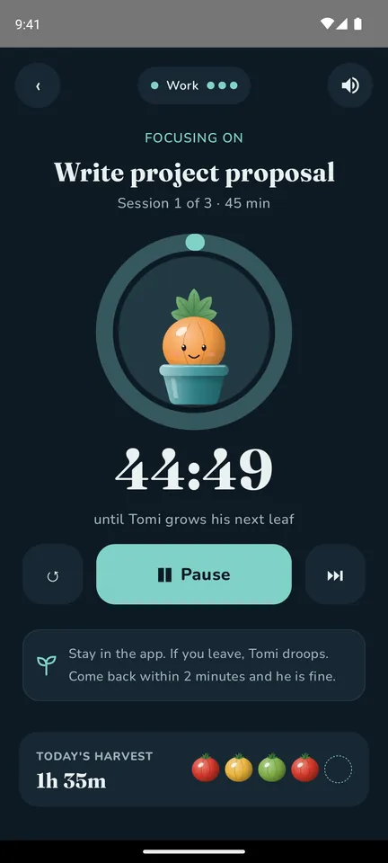
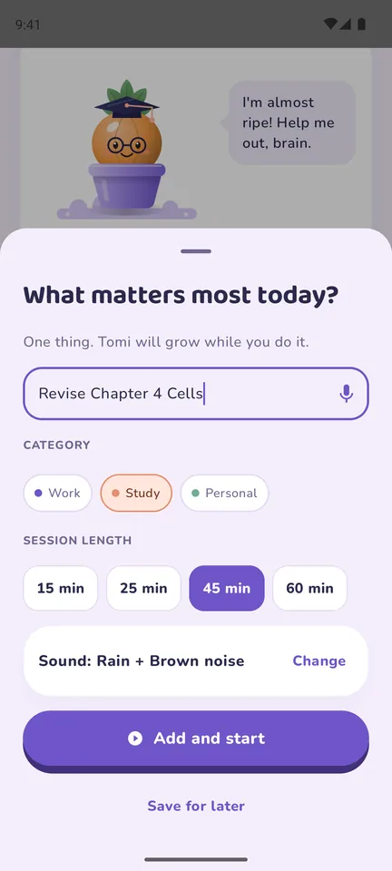
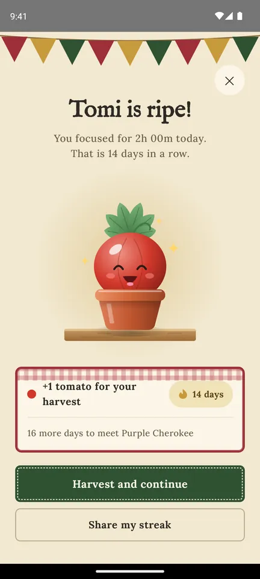
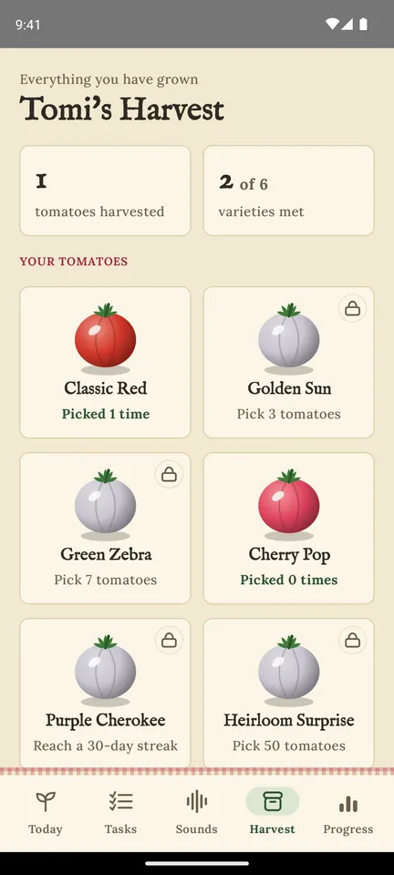
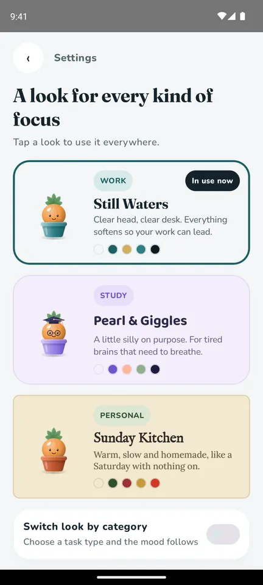
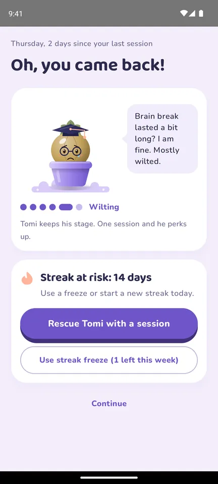

The tomato method
Why is the world’s best-known focus trick named after a tomato?
Learn the Pomodoro Technique in 60 seconds, test yourself with a 6-question quiz, and find your focus style.
60-second explainer
One timer, four steps
In the late 1980s, a university student named Francesco Cirillo couldn’t focus on his studies. He grabbed a kitchen timer shaped like a tomato, pomodoro in Italian, and challenged himself to work until it rang. Each focused block became a “pomodoro”.
- 1
Pick one task
Just one. The thing that matters most right now.
- 25:00
Wind the timer
Set 25 minutes and promise yourself nothing else until it rings.
- ✎
Park distractions
A thought or a message pops up? Write it down, deal with it after the ring.
- 5:00
Take a real break
Five minutes off. After every 4th pomodoro, take a longer one of 15 to 30 minutes.
The quiz
How well do you know the tomato?
“Pomodoro” is Italian for…
You scored 6 / 6
Pomodoro master
You could teach this method.
Your focus style
Still Waters
Clear head, clear desk.
Now meet Tomi, a little tomato who grows every time you finish a pomodoro. Reach your daily goal and he ripens. Daily Focus even has a look made for your style.

Meet Tomi
A tomato timer that grows a tomato
Daily Focus is a free Android app built on the Pomodoro Technique. Every focus session you finish helps Tomi grow, from a tiny seed to a ripe tomato you harvest when you reach your daily goal.

Pick one task
Type or say it, choose a category and 15, 25, 45 or 60 minutes.
Focus while Tomi grows
A calm timer with rain, waves or brown noise. Leave the app and Tomi droops.

Tomi ripens
Reach your daily goal and harvest a tomato.

Grow your harvest
Unlock six tomato varieties as your streak grows.

Pick your look
Still Waters, Pearl & Giggles or Sunday Kitchen, for work, study and home.

Missed a day? No guilt
Tomi waits, and a weekly streak freeze keeps your streak.